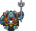
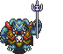

Lex Arcana - Episodio I
 

 Side quest Esopo
Side quest Esopo
27-7-21
- Arriviamo al villaggio di Vala. Ci seguiranno verso il monte 4 amazzoni e 6 guerrieri (2 cristiani e 4 antico culto). I guerrieri hanno saputo del demone che abbiamo affrontato. Tornando al villaggio anche l’elemento più ostile si è rivolto a noi spiazzato e con gratitudine
- Ho un rapporto sessuale con Sharam nel mentre delle cure
- Ippolita ci consegna ad ognuno un talismano benedetto da Diana per aver libero accesso al regno delle amazzoni (dobbiamo far attenzione a mantenere il segreto e a non perderlo per evitare ripercussioni)
- Apollonio visita erboristeria ed emporio per pozioni e armi
- A Temiscira ci accolgono festanti, ci convoca Ippolita
- Torniamo al villaggio delle amazzoni, nel mentre ci fermiamo al villaggio devastato
14-7-21
- Fedra parla con Apollonio della situazione e Alliatte esamina il terreno dello scontro
- Sconfiggiamo il demone dell’Orcus reincarnato che ci recita una frase premonitrice sul prossimo nemico
- Apollonio usa culti proibiti alla vista di una sorta di capo degli avversari non del tutto umano
23-2-2021
- I cavalieri avversari sono meno di noi e si possono raggiungere
- Ci svegliamo il giorno dopo e partiamo con Fedra e 40 amazzoni, abbiamo dei cavalli, dopo il primo giorno di viaggio si aggiungono a noi altri 50 cavalieri uomini, riconosciamo Scioti e Alale che era nel villaggio di Vaza, gli altri vengono da altri villaggi immaginiamo perché non gli abbiamo mai visti, arriviamo alla sterminata steppa, vediamo delle masse muoversi nella nostra direzione e fumo nero, sono rifugiati, Fedra aumenta l’andatura, un gruppo dei nostri viene mandata in una posizione più favorevole per vedere la situazione, incrociamo i rifugiati, ce li lasciamo alle spalle, raggiungiamo il punto dove spunta il fumo, troviamo una situazione tragica, teste accumulate e corpi crocefissi
- Zenobia con una scorta andrà a comunicare con l’impero per le amazzoni e noi andremo a difendere le amazzoni
- La regina ci cerca urgentemente però, le amazzoni sono attaccate, la regina nel mentre ha deciso, alleanza con l’impero. Alle prime luci dell’alba per suggellare l’alleanza andremo a difendere le amazzoni
- Pensiamo che dobbiamo fare una missione apposta e non partire da qui, per l’urgenza di dover far rapporto
- Io ci rivela che sul monte vive e una strega che potrebbe sapere qualcosa su Ecate
- Una visione è in essere e una parla del futuro, probabilmente quello dei cavalieri d’ombra, la guerra nell’Ade invece sta venendo in questo momento. La visione della spada con il sacrificio del capro sia stata la causa. (Gli animali neri erano destinati al sacrificio, olocausto)
- Siamo davanti alla regina delle amazzoni, Ippolita
- Arriviamo al palazzo principale di Temiscira
2-2-2021
- Andiamo a Temiscira una città di circa 5000 abitanti
- Alliate trova la tana del cervo e al suo interno trova delle vecchie corna, le corna di un cervo sacro hanno poteri taumaturgici cioè aumentano il potere di guarigione, Zenobia suggerisce di andare verso Fasi e Tanao di fare rapporto al tribuno, Apollonio pensa che per andare Tigrano Certa pensa che potremmo usare le carovane di mio padre che vorrà qualcosa in cambio
- Nella visone la spada sembra molto molto antica, dovremmo capire se i cultisti di Tanais sono da parte di Attila o no, le porte sembrano quelle degli inferi, il cane sembra il simbolo di Ecate che può entrare a suo piacimento negli inferi, il cane compare anche nella simbologia collegata ad Ade, il più grande tempio di Ade si trova in Grecia sulla parte tirrenica, sotto Corfour e Zenobia ci dice che c’è un tempio a Pergamo molto importante
- Il suono di battaglia nella visione potrebbe corrispondere ad uno scontro tra divinità infernali per la supremazia degli inferi, questo potrebbe spiegare l’assenza di Ade nei precedenti avvenimenti
- Dalla visione è probabile che ci aspetti un ulteriore invasione degli Unni con qualcosa che bolle in pentola
- La spada della visione sembra proto greca unita al sangue di capro che la benedice e alla visione dei cavalli d’ombra gli viene in mente che un vecchio nemico dell’impero abbia trovato la spada di Marte (da Attila chiamata spada della guerra) durante le sua invasioni dell’impero, Attila, sconfitto circa 25 anni dal generale Flavio Ezio ma mai morto e ritirato nei territori di cui sono originari verso l’Ucraina luogo dei fanatici
- Apollonio ha una visione di una prateria, da lontano sente un battito crescente fino a quando si accorge che sono zoccoli di cavalli, l’erba viene schiacciata da cavalieri d’ombra, la visione termina ma ne appare una seconda, vede una spada piena di sangue e la vede provenire dal corpo di un capro nero, la spada si impianta nel terreno e inizia a infessurarsi da cui escono delle ombre di spiriti e la terra inizia a tremare finite di fuori uscire le ombre ruotano intorno alla spada come se rispondessero a un richiamo di questa e finisce la visione, ne inizia un’altra, vede un cane a guardia di una porta ma è stata aperta, il cane entra dentro la porta con un ambiente oscuro assomigliante all’Averno illuminato da una luce rossastra e si sentono rumori di battaglia e lotta e la visione si interrompe
- Apollonio si avvicina all’acqua ma prima Io porge delle piante ad Apollonio e gli dice che lo aiuteranno nel rito di Precognizione
- Fedra si gira verso Apollonio e chiede cosa voglia fare, Apollonio prende la lancia e pinta la pianta nel terreno, disarmato si avvicina al cervo, il cervo lo guarda alza e abbassa la testa e batte uno zoccolo e sembra che s’illumina di luce propria e poi si dissolve in una miriade di farfalle luminose
- Fedra invita ad uscire dalla capanna e andare a cercare il cervo, fuori dalla capanna ci sono i nostri legionari, Fedra chiede ad Alliate se i legionari sono la nostra scorta e concede a loro di venire con noi, durante il viaggio Apollonio parla con un’amazzone, Io, Apollonio le da circa 45 anni, è la sacerdotessa di Diana e che è stato bravo a leggere correttamente l’oracolo, dice che la regina ha avuto dei sogni premonitori tremendi, sogni riguardanti un pericolo per il regno di Demiscira, dice che in Apollonio sono evidenti i doni di Apollo, ci muoviamo rapidamente tra i sentieri dei cacciatori nella foresta alla mattina del terzo giorno troviamo il cervo e la sua tana
28-1-2021
- Ci chiamano nella capanna grande, c’è Zenobia e ci sono le amazzoni che siedono al posto di Vaza. Zenobia ha rivelato la nostra condizione di guardie imperiali e le amazzoni non ne sono entusiaste. Fedra è il capo delle amazzoni. Dopo una lunga discussione sul filo del rasoio per la nostra incolumità, Fedra chiosa con un “e allora andiamo a cercare questo cervo”
- Alliate durante la notte ha un sogno, si ritrova con non più di 12 anni in una situazione mai successa, in un giaciglio di suo Padre, lo vede, lo invita a mettersi in marcia dopo la colazione, stanno seguendo le tracce di un lupo da alcuni giorni, trovano la tana del lupo e vanno per ucciderlo, il padre come al solito prepara un’esca per costringerlo a uscire, il lupo esce e Alliate pronto con una freccia colpisce il lupo e morte. Si avvicinano al lupo ma si accorgono che in realtà è un cane pastore . È strano che si siano confusi tanto. Pensano di rientrare al villaggio, Alliate viene consigliato dal padre di non fare errori nell’analisi delle traccie per non finire ingannati. Alliate si sveglia e noi stiamo ancora dormendo ma è quasi arrivata l’ora di partire per il cervo, Alliate si rende conto che Diana gli suggerisce che alcune traccie sono state lette erroneamente durante la nostra avventura, più in generale pensa che il sogno sia il simbolismo per un equivoco. Ci svegliamo e vediamo Alliate. I punti chiavi del sogno sono l’Armenia, errore d’interpretazione e impero
- Alla capanna troviamo Vaza, Salico e pochi altri, ci avviciniamo al trono di Vaza che ci informa che i cacciatori di Salico hanno trovato il cervo e lo stanno tenendo d’occhio. Presto partiremo per vederlo anche noi. Ci dice che è stato mandato un messaggero ad avvisare Zenobia ma non dipende da Vaza se potrà partecipare con noi. Salico ci dice che il cervo è a pochi giorni di viaggio, la foresta è un posto sicuro battuto dai Salico e gli altri (Abbiamo lasciato Raindi da circa una settimana). Riprendiamo le armi
13-1-2021
- Alliatte è il vincitore dei giochi
- Viene fatto un piccolo corteo che si sposta in una zona piu lontana del villaggio, arriviamo in un’arena, riusciamo a vedere la zona intorno a noi, verde e montagne
- Apollonio esegue ll rituale
- Andiamo a letto non troppo tardi perché il giorno dopo ci sarà da faticare, la mattina Apollonio effettuerà un rito, i bambini giocheranno con giochi meno pericolosi, il pomeriggio correremo su terreno sconnesso
- Alliate si sente a casa in questa comunità sia per l’ambiente selvatico che per il fatto che sono abili cacciatori
- I giochi saranno corsa in armi, lotta, tiro con l’arco e sfida in armi al primo sangue
23-12-2020
- Ritorno al villaggio dove viene detto che domani cominceranno i giochi, parteciperanno, Giuba, Diodoro, Alliate ed Esopo
- Viaggio in un bosco sacro per salutare Diana
- Una persona che controllava la porta, ha circa 50 anni, barba lunga, veste leggera, al collo ha una collana con una croce, sembra faccia parte del gruppo dei cristiani, si chiama Gregorio, starà con il gruppo incaricato da Vazha e dice che vuole parlare appena svegliati, Vazha ha organizzato delle attività per meglio per il villaggio dal momento che il gruppo ha attirato l’attenzione degli abitanti
- Svegliati che il sole è già alto, hanno dormito molto stranamente, Alliate ha una sensazione stranamente familiare, Apollonio congettura che gli Dei in questa zona possano aver interferito positivamente in qualche modo, esistono zone del mondo in cui le divinità hanno un’affinità maggiore, Apollonio pensa che questo possa essere uno di questi posti e i simboli visti in giro possano essere collegati, sembra di aver visto sacerdoti ma al massimo dei capi spirituali
2-12-2020
- Apollonio nota nel capanno una pianta di alloro che gli da un buon presagio sul futuro
- Vengono divisi, Esopo, Alliate, Apollonio e Diodoro in un capanno, gli altri in un altro, Zenobia viene condotta da un altra parte da sola e bendata
- Dopo alcune ore Alliate e gli altri arrivano al villaggio, si riuniscono davanti al villaggio, Salico avverte che parleranno col capo del villaggio e deciderà della loro sorte, fuori dal villaggio c’è un altro scaccia sogni
- Sono in 8 in totale, Diodoro e altri 4 barbari vanno all’accampamento in dietro da Alliate a prenderli
18-11-2020
- Lo scambio verbale che ne segue è fitto e il peggio è dietro l’angolo quando l’intuizione che i barbari possano parlare greco, suggerisce a Zenobia l’idea di appellarsi al diritto di ospitalità
- Vengono sorpresi in un’imboscata e sotto tiro viene intimato loro di andarsene o perire
- Zenobia, Saul, Diodoro, Apollonio ed Esepo vanno al villaggio, Diodoro fa da guida, a un certo punto si ferma e fa notare che appeso a dei rami vi è un sorta di scaccia sogni, incontrano un barbaro, è quasi ostile, armato leggero, parla greco stranamente
- Alliate trova una zona dove fare un campo, è abbastanza difendibile, sembra di vedere la zona del villaggio dei barbari da lontano, scorgono il fumo dei camini
12-11-2020
- Il party arriva alla valle, è lussureggiante di flora e fauna e ricca di acqua (togliamo 2 razioni)
- Il giorno dopo il party smonta il campo fa colazione con selvaggina ed erbe selvatiche, si mette in marcia alle 9, compra da Raindi delle provviste
- Apollonio chiacchierando con Ione attacca il discorso sull’amuleto di Marte, è molto devoto e ha una persona che l’aspetta al ritorno. Timeo e Ione sono i più simpatici. Saul e sulle sue ma Apollonio lo tira dentro nel discorso, Timeo è il tipo che si informa su tutto e vuole fare carriera nei militari, conferma che è il responsabile della spedizione, cita anche classici di Cesare o Adriano, ha origini molto umili e non ha nessuno che lo aspetti
- Raindi suggerisce di fare un campo base arrivati in zona ma di far attenzione a una comunità locale montana molto territoriale, sono molto prevenuti con gli imperiali (fine maggio)
- Raindi ha avvistato il cervo quando si e allontanato più del solito mentre stava seguendo una grossa preda, (fine inverno), indica una vallata ad alcuni giorni di viaggio da qui in direzione ovest lungo il crinale dopo un passo tra due cime (4 giorni di viaggio)
- Il party si accampa al capanno e con Raindi passa la serata
- Il party (Saul (giudeo, armeno) Timeo (illirico), Giuba (africano), Diodoro (greco), Ione (greco)) arriva nel capanno nel primo pomeriggio
…
- Due fulmini colpiscono lo stretto dei Dardanelli, sembra di buono auspicio
- Esopo ha un sogno singolare, con i sogni gli Dei ci parlano
- 17 aprile, nello stretto di Messina si abbatte una tempesta (vedere leggenda del cane a 6 teste)
- 14 aprile, ci imbarchiamo per Bisanzio
- Apollonio esegue un rito al tempio di Apollo, speculum mostra il cervo bianco vicino all’acqua
- Visita al tempio di Diana, Mercurio, Marte, Apollo
- Convocazione alla presenza del tribuno, siamo informati sulla nostra missione, in Armenia, degli esploratori hanno avvistato un cervo bianco
- Veniamo scelti per Arcana
- Pretoriani vanno alla ricerca di membri per Arcana in giro per l’intero impero
- Fondazione Arcana
- Impero in massima espansione, l’imperatore riceve divinazioni infauste